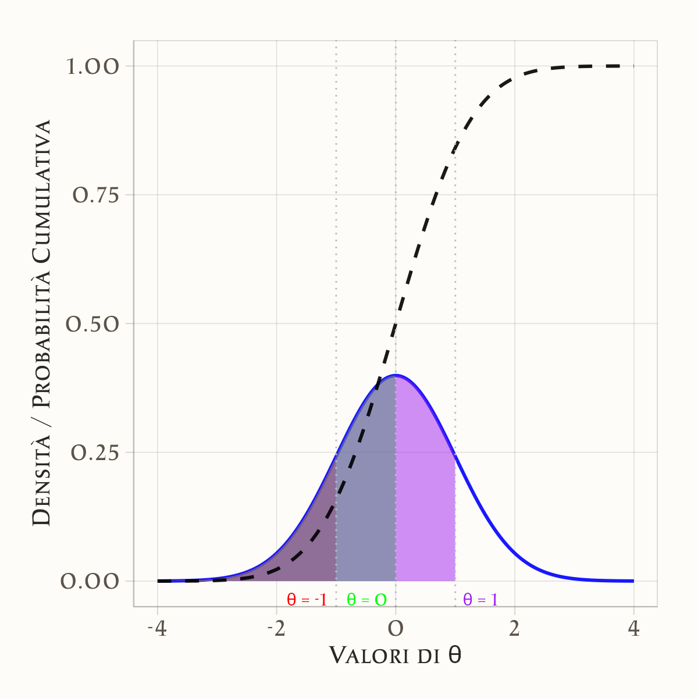

8 Distribuzioni di massa e di densità
“Ma una densità non è una probabilità. Integrando una densità su un intervallo continuo si ottiene una probabilità.”
— Allen B. Downey, Think Bayes.
Introduzione
Nel Capitolo 7 abbiamo introdotto il concetto di variabile casuale, distinguendo tra variabili casuali discrete e continue. Per le prime, abbiamo descritto formalmente come assegnare una distribuzione di massa di probabilità, mentre per le seconde abbiamo introdotto la nozione di funzione di densità di probabilità. Fino a questo punto, i concetti di distribuzione di massa e densità sono stati trattati in termini prevalentemente formali e matematici.
Lo scopo di questo capitolo è quello di approfondire queste idee, fornendo un’interpretazione più intuitiva e concreta di tali concetti. Attraverso esempi ed analisi pratiche, cercheremo di chiarire il significato sottostante alle distribuzioni di probabilità, rendendo più accessibili queste fondamentali strutture della teoria delle probabilità.
Panoramica del capitolo
- La variabilità di variabili discrete e continue.
- La differenza tra massa di probabilità (distribuzioni discrete) e densità di probabilità (distribuzioni continue).
- Perché, per una variabile continua, la probabilità di osservare un valore esatto è pari a zero.
- Dagli istogrammi alle funzioni di densità di probabilità.
- La funzione di ripartizione.
8.1 Variabili casuali discrete e continue
Un elemento fondamentale nella comprensione delle distribuzioni di probabilità è la distinzione tra variabili casuali discrete e continue, poiché le distribuzioni di probabilità associate differiscono in modo sostanziale.
- Variabili casuali discrete: assumono un numero finito o numerabile di valori. Ad esempio, il numero di successi in una serie di esperimenti o il risultato del lancio di un dado.
- Variabili casuali continue: possono assumere un numero infinito di valori all’interno di un intervallo. Esempi includono il tempo di attesa per un evento o il quoziente intellettivo (QI) di una persona.
Questa distinzione è fondamentale perché le relative distribuzioni probabilistiche si comportano in modi diversi.
8.1.1 Distribuzioni di probabilità discrete
Le distribuzioni di probabilità discrete descrivono fenomeni aleatori con un numero finito o numerabile di esiti possibili. Queste distribuzioni sono rappresentate da una funzione di massa di probabilità (PMF), che assegna una probabilità a ciascun valore della variabile casuale.
8.1.2 Distribuzioni di probabilità continue
Le distribuzioni di probabilità continue descrivono variabili casuali che possono assumere un numero infinito di valori in un intervallo. In questo caso, la probabilità è rappresentata da una funzione di densità di probabilità (PDF), che descrive la probabilità che la variabile assuma valori in un dato intervallo.
8.1.2.1 Probabilità come area sotto la curva
Le distribuzioni continue sono descritte dalla funzione di densità di probabilità (PDF). Per una variabile casuale continua \(X\), la probabilità che \(X\) assuma un valore compreso tra \(a\) e \(b\) è data dall’area sotto la curva della PDF tra \(a\) e \(b\):
\[ P(a \leq X \leq b) = \int_a^b f(x) \, dx. \]
8.1.2.2 Interpretazione della funzione di densità
La funzione di densità di probabilità (PDF) rappresenta un’astrazione continua dell’istogramma. Quando il numero di osservazioni tende a infinito e la larghezza degli intervalli tende a zero, il profilo dell’istogramma si avvicina alla PDF.
8.1.2.3 Proprietà della PDF
- Area Totale: L’area totale sotto la curva della PDF è uguale a 1, poiché rappresenta la probabilità totale.
- Probabilità per Intervalli: La probabilità che la variabile assuma un valore in un intervallo \([a, b]\) è data dall’area sotto la curva tra \(a\) e \(b\).
- Probabilità per Singoli Valori: Per una variabile continua, la probabilità di un singolo valore è sempre zero, poiché corrisponde all’area sotto la curva in un punto.
8.1.2.4 Parametri delle distribuzioni di probabilità
Le distribuzioni di probabilità, sia discrete che continue, sono definite da parametri che ne determinano le proprietà fondamentali. Questi parametri consentono di adattare il modello probabilistico ai dati osservati.
8.1.2.5 Proprietà influenzate dai parametri
- Posizione (Tendenza Centrale): Indica il valore attorno al quale si concentra la distribuzione. Ad esempio, nella distribuzione normale, la media (\(\mu\)) rappresenta il centro della distribuzione.
- Dispersione: Misura quanto i valori della distribuzione si allontanano dalla posizione centrale. Nella distribuzione normale, la deviazione standard (\(\sigma\)) controlla la larghezza della curva.
- Forma: Determina l’asimmetria o la curtosi della distribuzione. Alcune distribuzioni, come quella gamma o beta, hanno parametri specifici per regolare la forma.
8.2 Il paradosso delle variabili casuali continue
Un aspetto controintuitivo delle variabili casuali continue è che la probabilità di osservare esattamente un determinato valore è sempre pari a zero. Per esempio, se consideriamo una variabile continua che rappresenta l’altezza di una persona, la probabilità che l’altezza sia esattamente 170 cm è espressa da
\[ P(X = 170) = 0. \]
Perché accade questo? La risposta sta nel concetto di “esattezza”. Se riscriviamo 170 cm come 170.00000000000000000000000000000000000 cm (con infiniti decimali), diventa chiaro che stiamo cercando un singolo punto in un continuum infinito.
Questo non significa che l’evento sia impossibile, ma che nelle variabili continue la probabilità ha senso solo se riferita a intervalli di valori. Infatti, se sommiamo infinite probabilità diverse da zero, supereremmo 1, cosa impossibile.
8.2.1 Due implicazioni importanti
Questo modo di definire la probabilità nelle variabili continue comporta due implicazioni chiave:
-
Calcolo della probabilità su intervalli:
Nelle variabili continue, le probabilità si calcolano solo su intervalli (es.: tra 169.5 cm e 170.5 cm). Questo perché, se ogni singolo valore avesse probabilità > 0, la somma di infiniti valori supererebbe 1 (il che è impossibile). -
Eventi con probabilità zero:
Il fatto che un evento (ad esempio, \(X = 170\)) abbia probabilità zero non implica che l’evento sia impossibile. È come cercare un granello di sabbia specifico su una spiaggia infinita: tecnicamente possibile, ma praticamente improbabile.
8.2.2 Il paradosso della probabilità zero
Questo ragionamento porta a un apparente paradosso: se la probabilità che l’altezza di una persona sia esattamente 170 è zero, come possiamo mai osservare un valore specifico, come 170 (o un qualsiasi altro valore), nella realtà?
Una metafora utile per comprendere questo fenomeno è data dal celebre paradosso di Zenone della freccia. Nel paradosso, si sostiene che, in ogni istante, la freccia sia immobile, e dunque non si dovrebbe mai muovere. Analogamente, ogni singolo valore (es.: 170 cm) ha probabilità zero, ma l’insieme di infiniti valori in un intervallo crea un’area sotto la curva (probabilità) misurabile.
8.2.3 La prospettiva degli infinitesimi
Negli anni ’60, il matematico Abraham Robinson sviluppò una teoria matematica rigorosa degli infinitesimi, ovvero numeri infinitamente piccoli, diversi da zero. In questo quadro, possiamo reinterpretare la probabilità dei singoli punti nel seguente modo:
-
Probabilità infinitesimale:
Un singolo valore puntuale non ha probabilità strettamente zero, bensì infinitamente piccola (un infinitesimo). Pur essendo praticamente indistinguibile da zero nella teoria classica, l’aggregazione (tramite integrazione) di infiniti eventi con probabilità infinitesimali può produrre un valore di probabilità finito e positivo per un intervallo. In altre parole, infiniti punti infinitamente piccoli sommati insieme generano un intervallo di probabilità misurabile e significativa.
In conclusione, il cosiddetto “paradosso della probabilità zero” non rappresenta un vero paradosso, ma evidenzia piuttosto i limiti delle nostre intuizioni quando affrontiamo concetti inerenti variabili continue. La chiave per la comprensione risiede nella distinzione tra il contributo di un singolo punto (infinitesimale o zero, nell’analisi classica) e l’area complessiva calcolata mediante l’integrazione.
8.3 La funzione di ripartizione per una variabile casuale continua
La funzione di ripartizione, nota anche come distribuzione cumulativa, è uno strumento fondamentale per descrivere il comportamento di una variabile casuale, sia essa discreta o continua. Per una variabile casuale continua \(\Theta\), la funzione di ripartizione \(F_{\Theta}(\theta)\) è definita come:
\[ F_{\Theta}(\theta) = P(\Theta \leq \theta). \]
In altre parole, \(F_{\Theta}(\theta)\) rappresenta la probabilità che la variabile \(\Theta\) assuma un valore minore o uguale a \(\theta\). Questa definizione è identica a quella utilizzata per le variabili casuali discrete, ma nel caso continuo assume un significato particolare a causa della natura continua della variabile.
8.3.1 Proprietà della funzione di ripartizione
La funzione di ripartizione per una variabile casuale continua gode di alcune proprietà importanti:
- Monotonicità Crescente: \(F_{\Theta}(\theta)\) è una funzione non decrescente. Ciò significa che, all’aumentare di \(\theta\), la probabilità \(P(\Theta \leq \theta)\) non diminuisce.
-
Limiti agli Estremi:
- Quando \(\theta \to -\infty\), \(F_{\Theta}(\theta) \to 0\).
- Quando \(\theta \to +\infty\), \(F_{\Theta}(\theta) \to 1\).
- Continuità: Per una variabile casuale continua, \(F_{\Theta}(\theta)\) è una funzione continua. Questo differisce dal caso discreto, dove la funzione di ripartizione è a gradini.
8.3.2 Calcolo delle probabilità per intervalli
Una delle applicazioni più utili della funzione di ripartizione è il calcolo della probabilità che la variabile casuale \(\Theta\) assuma valori all’interno di un intervallo specifico. Dati due valori \(\theta_1\) e \(\theta_2\) (con \(\theta_1 < \theta_2\)), la probabilità che \(\Theta\) sia compreso tra \(\theta_1\) e \(\theta_2\) è data da:
\[ P(\theta_1 < \Theta \leq \theta_2) = F_{\Theta}(\theta_2) - F_{\Theta}(\theta_1). \]
Questa formula è particolarmente utile perché, nel caso delle variabili continue, la probabilità di un singolo punto è sempre zero. Pertanto, per calcolare probabilità significative, è necessario considerare intervalli di valori.
8.3.3 Relazione con la funzione di densità di probabilità (PDF)
La funzione di ripartizione è strettamente legata alla funzione di densità di probabilità (PDF), \(f(\theta)\). Mentre la PDF descrive la densità di probabilità in ogni punto, la funzione di ripartizione rappresenta l’area sotto la curva della PDF fino a un certo valore \(\theta\). Formalmente, la funzione di ripartizione si ottiene integrando la PDF:
\[ F_{\Theta}(\theta) = \int_{-\infty}^{\theta} f(t) \, dt. \]
Questa relazione evidenzia come la funzione di ripartizione sia una rappresentazione cumulativa della probabilità, ottenuta sommando (o integrando) i contributi della densità di probabilità fino al valore \(\theta\).
8.3.4 Interpretazione grafica
Graficamente, la funzione di ripartizione rappresenta l’area sotto la curva della PDF a sinistra del valore \(\theta\). Ad esempio, se consideriamo la distribuzione normale standard:
- Per \(\theta = 0\), \(F_{\Theta}(0) = 0.5\), poiché la media della distribuzione è 0 e la curva è simmetrica.
- Per \(\theta = 1\), \(F_{\Theta}(1) \approx 0.8413\), come visto sopra.
- Per \(\theta = -1\), \(F_{\Theta}(-1) \approx 0.1587\), poiché la coda sinistra della distribuzione contiene il 15.87% della probabilità.

In conclusione, la funzione di ripartizione è uno strumento essenziale per comprendere e lavorare con variabili casuali continue. Essa non solo fornisce una rappresentazione cumulativa della probabilità, ma permette anche di calcolare probabilità per intervalli e di collegare la PDF alla distribuzione complessiva della variabile. Attraverso la sua relazione con la PDF, la funzione di ripartizione offre un ponte tra la descrizione locale (densità) e quella globale (probabilità cumulativa) di una variabile casuale continua.
8.4 Interpretazioni bayesiana e frequentista della PDF
In questo capitolo, abbiamo introdotto la funzione di densità di probabilità come limite del profilo di un istogramma, una descrizione intuitiva e utile per comprendere il concetto di densità. Questa interpretazione corrisponde, tuttavia, alla visione frequentista della densità di probabilità. Nella statistica Bayesiana, l’interpretazione è diversa e merita una spiegazione separata.
8.4.1 Interpretazione frequentista
Concetto di ripetizione degli esperimenti:
Idea di frequenza relativa:
Nel paradigma frequentista la probabilità è intesa come il limite della frequenza relativa di un evento ottenuto al ripetere un esperimento un numero molto elevato di volte. Immaginiamo di eseguire un esperimento molte volte, ad ogni ripetizione si ottiene un valore di \(x\). Se costruiamo un istogramma di questi valori, questo istogramma diventa sempre più “liscio” man mano che il numero delle ripetizioni aumenta, fino a convergere alla PDF \(p(x)\).PDF come istogramma limite:
La PDF rappresenta la distribuzione dei valori osservati in una serie di ripetizioni dell’esperimento. In altre parole, essa descrive quanto frequentemente, in una ipotetica serie infinita di esperimenti, il valore \(x\) assume un determinato intervallo.Esempio intuitivo:
Se misuriamo l’altezza degli individui in una popolazione, nel contesto frequentista, la PDF ci dice quale frazione di individui cade in un certo intervallo di altezza se potessimo misurare ogni possibile individuo (o eseguire ripetutamente misurazioni indipendenti in una popolazione “ideale”).
8.4.2 Interpretazione bayesiana
Concetto di incertezza e credenza:
-
Parametro come variabile casuale:
In statistica bayesiana, i parametri non sono visti come quantità fisse, ma come incerti. Si assume che ogni parametro (o dato osservato) abbia una propria distribuzione che riflette la nostra incertezza su di esso.- Ad esempio, se stiamo stimando un parametro \(\theta\) (ad esempio la media di una distribuzione), in un approccio bayesiano attribuiamo a \(\theta\) una distribuzione di probabilità che esprime quanto sia plausibile ciascun valore di \(\theta\), dati i dati osservati e le nostre conoscenze pregresse.
-
PDF come distribuzione di credenze:
La PDF, in questo contesto, non descrive una frequenza relativa osservabile sperimentalmente (perché l’esperimento non viene ripetuto infinite volte, o perché \(x\) è un valore fisso ma incerto), ma esprime il grado di fiducia o la plausibilità che il valore “vero” di \(x\) (o di un parametro) si trovi in un certo intervallo.- È come “spalmare” la nostra incertezza su tutti i valori possibili: la sfumatura lungo l’asse \(x\) rappresenta la distribuzione delle nostre credenze.
Analogia con la densità di materia:
Un’utile analogia è quella della densità di materia \(\rho(x)\) in meccanica classica: la densità non descrive la posizione precisa di ogni atomo, ma come la materia (o, in questo caso, la probabilità) è distribuita lungo l’asse \(x\). Allo stesso modo, in una PDF bayesiana, non sono i “valori di \(x\)” ad essere distribuiti (in termini di frequenza osservabile), ma è la nostra “incertezza” a essere distribuita sui possibili valori.Esempio intuitivo:
Immagina di dover stimare la probabilità che una certa ipotesi sia vera, ad esempio la media dell’altezza in una popolazione. Invece di pensare a misurazioni ripetute, consideri il valore medio come fisso ma incerto. La PDF bayesiana esprime il grado di credenza per ciascun possibile valore della media, in base ai dati raccolti e alle informazioni a priori.
8.4.3 Confronto
-
Frequentista:
- Focus: Distribuzione dei dati.
- Interpretazione: La PDF descrive come i valori di \(x\) sarebbero distribuiti se ripetessimo l’esperimento infinite volte.
- Esempio: L’istogramma dei dati osservati in una lunga serie di esperimenti.
-
Bayesiano:
- Focus: Distribuzione della nostra incertezza o credenza.
- Interpretazione: La PDF riflette quanto sia plausibile ciascun valore di \(x\) (o di un parametro) dato l’informazione disponibile, senza necessità di ripetere l’esperimento.
- Esempio: La distribuzione a posteriori di un parametro dopo aver combinato dati osservati e informazioni a priori.
In sintesi, questa distinzione tra interpretazioni non è solo una questione di semantica, ma ha implicazioni pratiche nella formulazione di modelli statistici e nell’interpretazione dei risultati. Mentre l’approccio frequentista è spesso utilizzato quando si può concettualmente pensare a ripetizioni infinite dell’esperimento, l’approccio bayesiano è particolarmente utile quando si vuole esprimere e aggiornare la propria incertezza su una quantità basandosi sia su dati che su conoscenze pregresse.
Riflessioni conclusive
La funzione di densità di probabilità (PDF) costituisce il fondamento per la descrizione delle variabili casuali continue, consentendo di associare le probabilità ad intervalli, tramite il calcolo dell’area sottesa alla curva. In questo contesto, la probabilità di osservare un valore esatto risulta zero, non per impossibilità dell’evento, ma perché in un insieme continuo ogni singolo punto contribuisce con un’area infinitesimale.
Il paradosso apparente, secondo cui la somma di infiniti contributi nulli porta a una probabilità totale positiva, si risolve grazie alla teoria dell’integrazione. Integrando i contributi infinitesimali lungo un intervallo, si ottiene una quantità finita che rappresenta la probabilità complessiva dell’evento. Un’interpretazione alternativa, fornita dalla teoria degli infinitesimi di Abraham Robinson, consente di attribuire a tali eventi probabilità infinitesimali, distinguendo tra diverse “grandezze” e chiarendo ulteriormente il processo di aggregazione verso un valore unitario.
Nel campo della data science, le distribuzioni di probabilità—formalmente rappresentate da \(p(x)\)—sono strumenti indispensabili per modellare la variabilità osservabile in una popolazione. Queste distribuzioni non mirano a riprodurre in maniera dettagliata ogni aspetto della realtà, ma offrono un modello semplificato che consente di generalizzare i dati osservati e di formulare previsioni rigorose sui fenomeni futuri. In altre parole, \(p(x)\) non rappresenta la popolazione nel suo complesso, bensì un’astrazione matematica che cattura l’incertezza e la variabilità del fenomeno studiato.